Roof Outside Cover · 46-02-06
The following are the recommended tools and material required to perform the various types of repairs.
Before ordering from the sources listed, it is suggested that local jobbing shops or radio equipment outlets be contacted for availability of these items.
Tools
-
Heat Gun-Model HG-501…
Source: Electric Tool & Service Co., 6188 12th St. Detroit, Michigan 48208.
-
Soldering Iron consisting of (1 each):
No. 6100-Imperial Unger Handle No. 6102-Imperial Unger Standard 2-wire cord…
No. 6202-Imperial Unger 25-Watt heating cartridge,…
No. 6372—Imperial Unger Tip … Source: Radio Specialties Co., 12775 Lyndon Ave., Detroit, Michigan 48227.
-
Transformer-Model No. Superior Variable…
Bud Metal Box Model No. C-1606
Source: Radio Specialties Co., 12775 Lyndon Ave., Detroit, Michigan 48227.
-
Hypodermic Syringe 2 1/2 cc with a No. BD-18 needle (Plastipakz… Source: Any medical supply company.
Materials
-
Rubber Cement Pick-Up (DRAFCO)…
Source: Procure locally or Drafting Materials Inc., 4851 Woodward Ave., Detroit, Michigan 48201.
-
Abrasive—Cellulose sponge No.
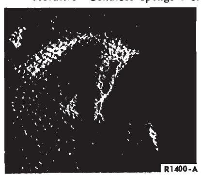
Fig. 3 — Air Bubble7010 (Scotchbrite Brand 3M) (Surfa Scuff Sponge)…
Source: Procure locally
-
Vinyl Top Cleaner—Part No. COAZ-19526-A …
Source: Class A Facing Parts Denot
-
Vinyl Top Adhesive—Part No. COAZ-19C525-A …
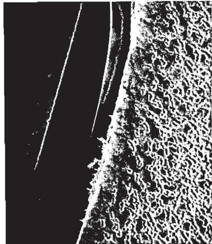
Fig. 4 — Scuffs or Abrasions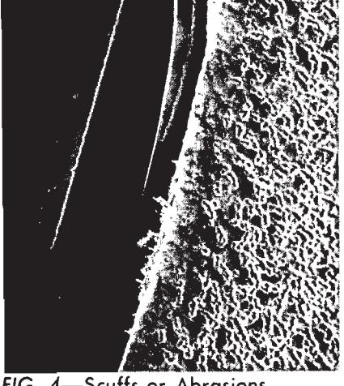
Fig. 5 — Major Cuts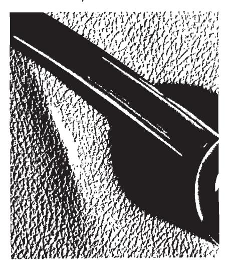
Fig. 6 — WrinklesSource: Class BA Master Parts Depot
-
Vinyl Paint—Spray Can net wt. 5 Oz. Avd.
Color Part Number Black VR-1724-S White VR-1525-S VR-1903-S Blue VR-1915-S Gold
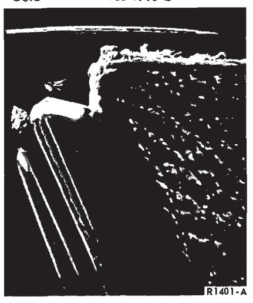
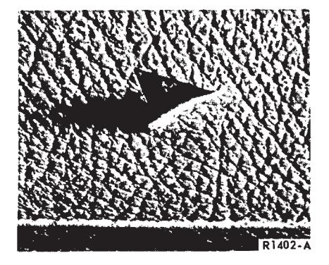
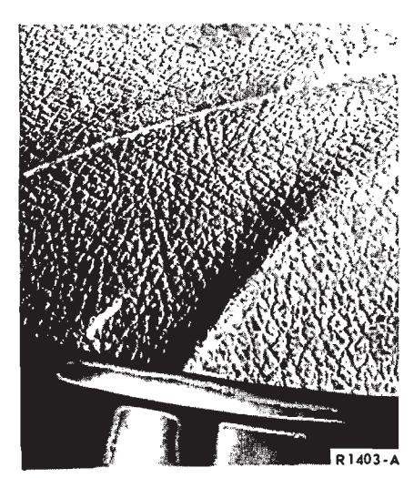
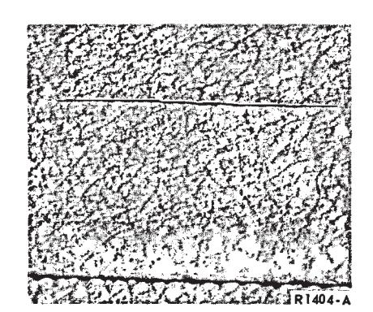
Fig. 7 — Minor Surface Cut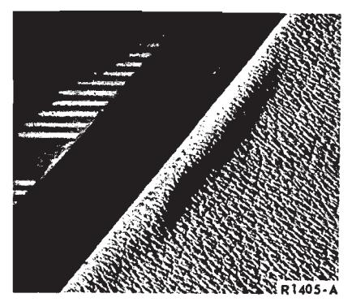
Fig. 8 — LoosenessParchment VR-1631-S Brown VR-2045-S Dulling Agent VR-95F17-S Class drop ship.
The above colors are packaged in quantities of (6). When ordering always select any combination of (6) colors by part number.
Types of Repairs
The following are the various types of items that can be repaired:
Bubbles
A separation between the vinyl cover and metal surface due to trapped air (Fig. 3).
Scuffs and Abrasions
Surface damage caused by rubbing action (Fig. 4).
Major Cuts
A cut which has penetrated through both the vinyl surface and cloth backing (Fig. 5).
Wrinkles
A crease or small fold on the surface of the material. This condition is usually evident outboard of the bonded seam (Fig. 6).
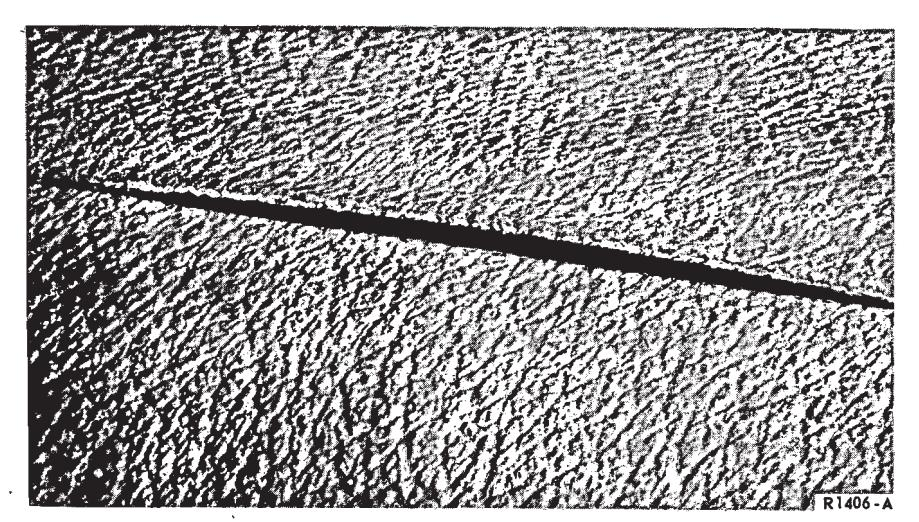
Fig. 9 — Bonded Seam Separation
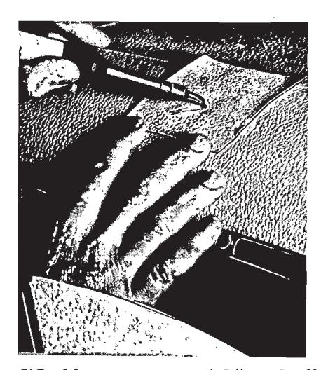
Fig. 10 — Stripping and Filling Scuffed Area with Vinyl
Minor Cuts
A surface cut which has not penetrated the cloth backing (Fig. 7).
Looseness
Vinyl material that has not been drawn tight over a sharp bend in the sheet metal such as around the back-lite or over padded material used on certain models and body styles (Fig. 8).
Separated Bonded Seam
Seams in which the two pieces of material have a gap between the sections (Fig. 9).
Adhesive Smears
These are smears of the type that normal cleaning will not remove such as trim cement, drip rail sealer, or the adhesive which is used for vinyl roof installation.
These are typical of the kind of items that are repairable. However, there are certain considerations regarding the type of repairs to be performed (e.g., whether repair is to be performed during pre-delivery, color of vinyl roof involved, location of defect, etc).
Repair Procedures
Before proceeding with any repairs thoroughly clean the vinyl roof with cleaner, Part No. COAZ-19526-A. Use a scrub brush to remove all dirt imbedded in the graining. Repeat the cleaning operation as often as required, particularly on white vinyl tops.
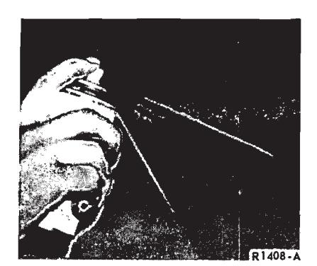
Fig. 11 — Spraying Repaired Area
Scuffs or Abrasions
Connect the soldering iron and set the transformer heat range to No. 7 position (approximately 225 degree F).
Clean the soldering iron tip thoroughly with the abrasive pad. This must be done frequently while performing the repair to avoid vinyl build-up on the tip.
Lightly slide the soldering tip over the scuff mark several times using short overlapping strokes until the frayed vinyl has fused to the surface.
The vinyl surface may have been removed by the scuff exposing the cloth backing. If this is encountered, it will be necessary to fill in with vinyl as shown in Fig. 10. This is typical where vinyl must be added and is accomplished by stripping a small quantity of vinyl off a piece of scrap material with the hot tip of the solder gun as shown in Fig. 10. Carefully fill in as required using short overlapping strokes. (Several stripping operations may be required to adequately fill the scuffed area).
The graining effect in the vinyl can be restored by carefully etching the grain pattern into the vinyl with the sharp edge of the soldering tip. The gloss or shiny surface created by the repair can be removed with the dulling agent or by spraying the area with liquid vinyl as shown in Fig. 11. Several color coats may be required. The last coat should be a fog coat to minimize gloss.
This repair can be applied to scuffs or abrasions in most areas of the vinyl top.
Minor Surface Cuts
Connect the soldering gun and set the transformer heat range to No. 7 position (approximately 225 degrees F).
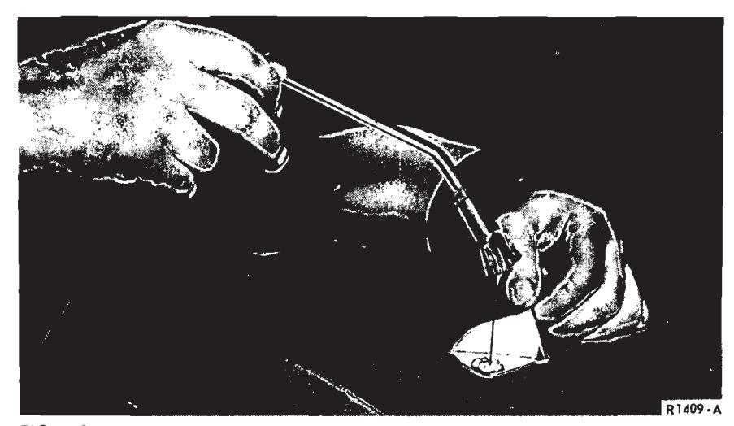
Fig. 12 — Application of Adhesive
Clean the soldering iron tip thoroughly with the abrasive pad. This must be done frequently during the repair to avoid vinyl build-up on the tip. Lightly slide the soldering tip across the cut surface using very short strokes (1/4 inch or less) until the cut is covered with vinyl. Again go over the cut lengthwise with the soldering tip to smooth out the surface. The graining effect can be restored by carefully etching the grain pattern into the vinyl with the sharp edge of the soldering tip.
If required, the gloss or shine on the vinyl surface created by the repair can be removed with the dulling agent and then spraying the area with liquid vinyl as shown in Fig. 11. Several color coats of liquid vinyl may be required. The last coat should be a fog coat to minimize gloss.
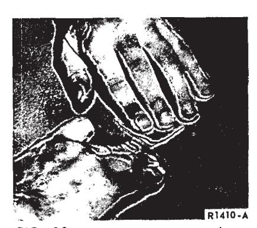
Fig. 13 — Positioning Material into Damaged Area
Major Cuts
Connect the soldering iron and set the transformer heat range to No. 7 position (approximately 225 degrees F).
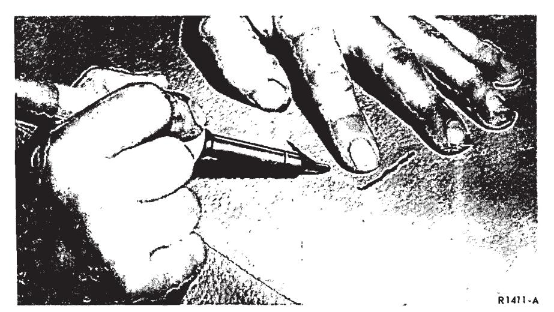
Fig. 14 — Fusing Cut With Soldering Iron
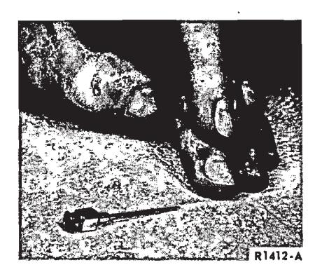
Fig. 15 — Expelling Air With Hypodermic Needle
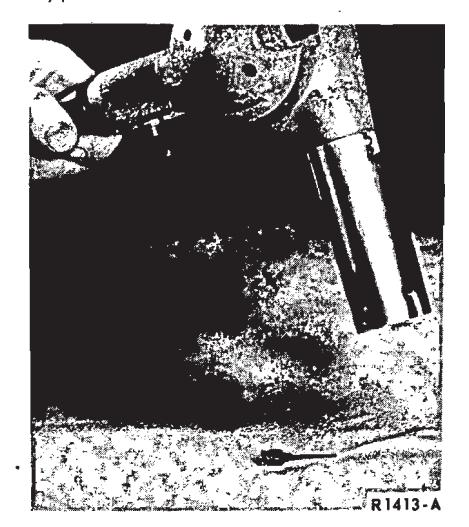
Fig. 16 — Applying Heat With Heat Gun
Clean the soldering iron tip with the abrasive pad. This must be done frequently during the repair to avoid vinyl build-up on the tip. If the damage is over an inch long, apply a light coat of adhesive as shown in Fig. 12. (It is not necessary to use cement if the cut is over a padded area).
Allow the advesive to air dry for several minutes, then carefully lay the material into the damaged area so that the raw edge butts firmly together as shown in Fig. 13.
Start at the center of the cut and lightly slide the soldering tip across the cut surface, as shown in Fig. 14, using very short strokes (1/4 inch or . less) until the cut is covered with vinyl.
Again go over the cut lengthwise with the soldering tip to smooth out the surface.
The graining can be restored by carefully etching the grain pattern into the vinyl with the sharp edge of the soldering tip.
If required the gloss or shine created by the repair can be removed with the dulling agent or by spraying the area with liquid vinyl as shown in Fig. 11. Several coats may be required. The last coat should be a fog coat to minimize gloss.
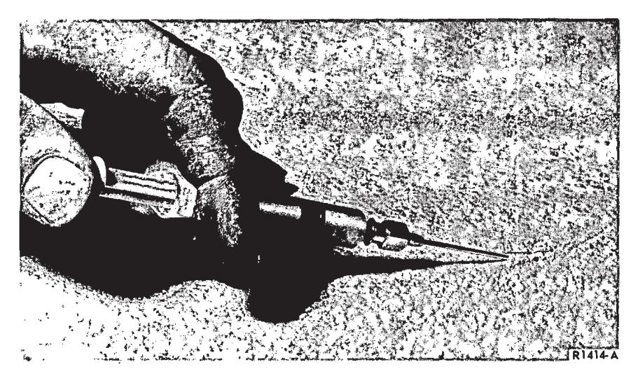
Fig. 17 — Injecting Adhesive Under Vinyl Material
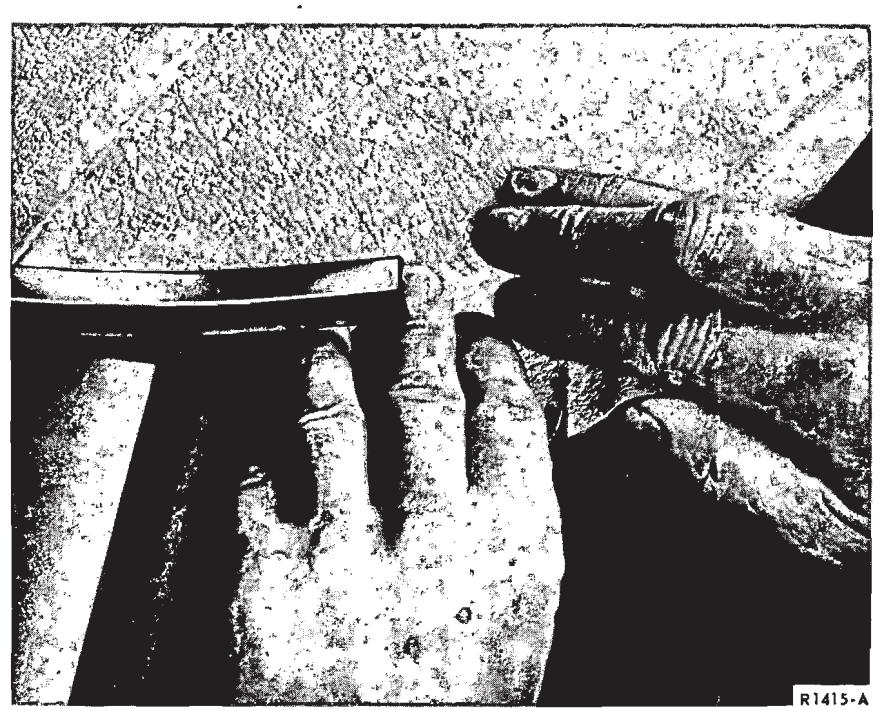
Fig. 18 — Correcting Wrinkles at Front Corner
Bubbles
Generally, an air bubble is caused by trapped air and can be corrected by expelling the air with a hypodermic needle as shown in Fig. 15. It will be necessary to activate the adhesive under the vinyl after the air has been expelled by applying heat with the heat gun until the vinyl surface is hot to the touch. Then, work the material down with the fingers as shown in Fig. 16.
To avoid overheating and possible damage to the vinyl, hold the heat gun about 10 to 12 inches from the surface and constantly move the gun in a circular motion.
In some cases where a good bond cannot be obtained, insert a small amount of adhesive, Part No. C2AZ-19C525-A under the vinyl material with a syringe as shown in Fig. 17.
Wrinkles
Do not confuse a wrinkle with a bubble. Usually a wrinkle has small radial folds with an excessive amount of slack material which cannot be displaced without rearranging the material. To illustrate an example, the following repair procedure describes the correction of a wrinkle at the front corner
Fig. 19 — Loose Material at Blind Quarter
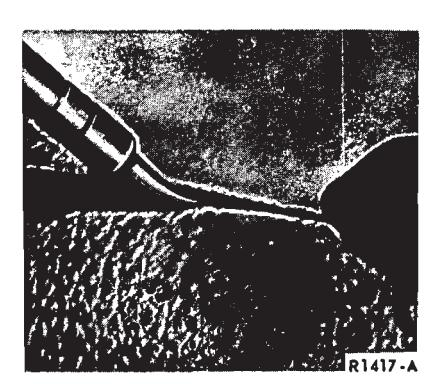
Fig. 20 — Applying Heat to Underside of Bonded Seam
Partially or completely remove any mouldings or ornamentation in the immediate area of the wrinkle.
Pull the vinyl material free from the roof panel up to the bonded seam and along the side drip rail for approximately 10 inches.
Clean the surface thoroughly of the old adhesive. Apply a thin film of adhesive to both the vinyl material and along the drip rail. Allow the adhesive to air dry for several seconds.
Grasp the material firmly then draw the material taut until all wrinkles are removed as shown in Fig. 18. Fold the material under the drip rail flange.
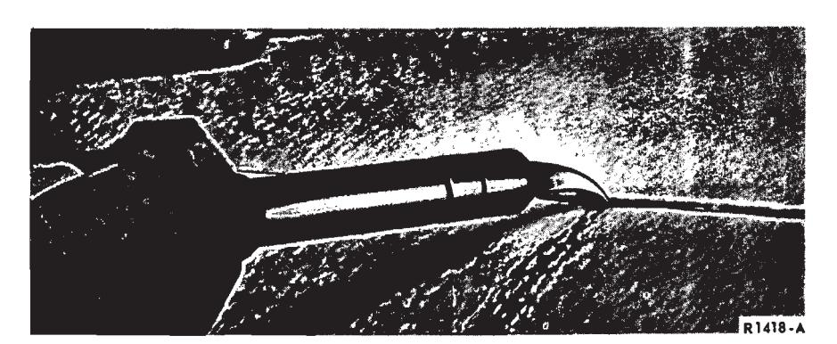
Fig. 21 — Applying Heat to Edge of Bonded Seam
Secure the front edge of material with one or more drive nails as required to assure that the material does not creep. Apply sealer under the drive nails to prevent possible water leak.
Install the mouldings and weatherstrips.
Looseness
Loose vinyl roof material usually occurs at padded areas of the vinyl roof which is used only in certain body styles. The following is a typical repair of loose material at the blind quarter area, and generally applies to other areas such as around the backlite opening.
Partially or completely remove mouldings or ornamentation in the immediate area to be repaired.
Carefully peel the edge of the material free from the sheet metal.
Clean the metal surface thoroughly of the old adhesive. Apply a thin film of adhesive to both the vinyl and metal surface. Allow the adhesive to air dry for several seconds.
Grasp the material firmly then draw the material taut as shown in Fig. 19. Secure the edge of the material with drive nails or sheet metal screws as required to assure that the material does not creep.
Apply sealer over the drive nails or sheet metal screws to prevent possible water leaks. Install the mouldings.
Separated Bonded Seam
Connect the soldering iron and set the transformer heat range to No. 7 position (approximately 225 degrees F).
Clean the soldering iron tip thoroughly with the abrasive pad. This must be done frequently while performing the repair to avoid vinyl build-up on the tip. Start at one end of the separated seam and insert the tip of the soldering iron between the bonded seam as shown in Fig. 20. Note the position of the curved tip. Slowly move the tip along the underside of the seam following immediately with the fingers to press the seam together.
Reverse the soldering iron tip as shown in Fig. 21 and again slowly move the tip along the edge of the seam.
This completes the repair and, if performed correctly, should not require paint touch-up. If, however, the vinyl surface outboard of the seam has a glossy or shiny appearance created by the repair, the area can be restored to its original satin finish with a dulling agent or by applying liquid vinyl as shown in Fig. 11. Several coats may be required. The last coat should be a fog coat to minimize gloss.
Adhesive Smears
Adhesive smears can be removed in most cases, provided this is done immediately and the adhesive is not allowed to age on the vinyl roof. Therefore, it is imperative that the clean-up is performed as soon as possible. Fresh sealer smears can be removed by rubbing the smear off with a rubber cement pick-up block such as the type described in the list of materials.